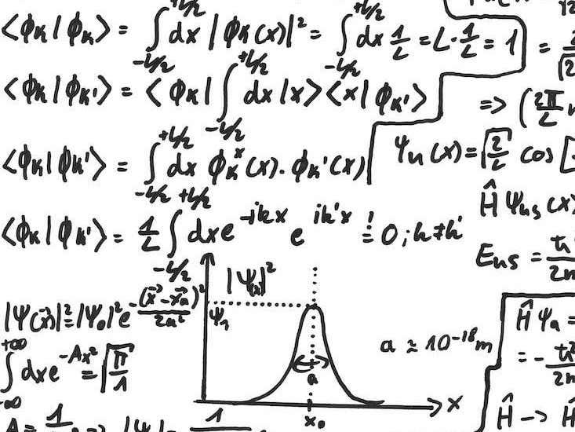

La física es una ciencia que se encarga de estudiar el movimiento y las interacciones entre los cuerpos. Para su estudio es fundamentar modelar con matemáticas los fenómenos vistos experimentalmente. En esta página se muestran algunos de los temas que se estudian en esta ciencia.
